CLAUDE’S PICK
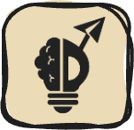
AlphaEvolve — Gemini 기반 고급 알고리즘 설계 AI 에이전트
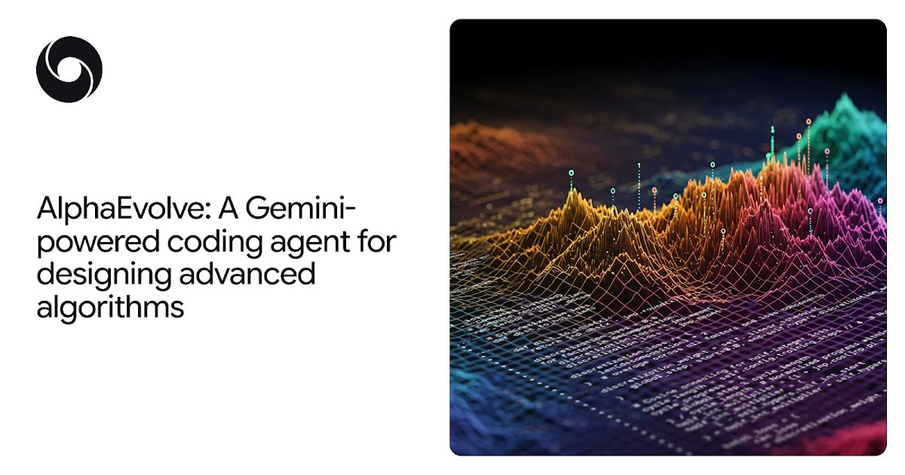
대규모 언어모델이 수학 및 컴퓨팅의 복잡한 문제를 해결할 때 환각 문제와 창의성 제한이 발생한다. AlphaEvolve는 Gemini 모델의 창의적 문제 해결 능력과 자동 평가기를 결합한 진화 알고리즘 프레임워크로, 반복적 코드 최적화를 통해 Google 데이터센터 효율성 개선, 행렬 곱셈 알고리즘 가속화, 미해결 수학 문제 해결 등을 달성했다.
핵심 포인트: 핵심 성과: AlphaEvolve는 Google의 데이터센터, 칩 설계, AI 훈련 인프라 효율성을 향상시켰으며, 더 빠른 행렬 곱셈 알고리즘 설계와 개방형 수학 문제에 대한 새로운 해법 발견을 통해 다양한 분야에의 적용 가능성을 입증했다.
🔗 deepmind.google/blog/alphaevolve-a-gemini…
기타 (Others)
html-slide-remote — 로컬 허브 기반 발표자 노트 동기화 원격 제어 시스템
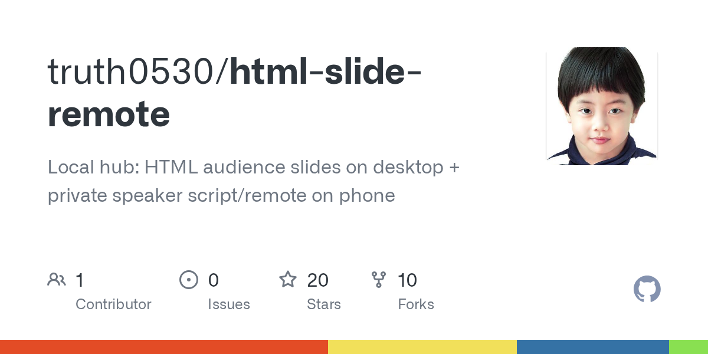
발표 중 프로젝터에는 슬라이드만 표시하고 발표자의 노트와 다음 슬라이드 미리보기를 휴대폰에서만 보는 문제를 해결하는 로컬 Python 허브 기반 도구. 같은 Wi-Fi 또는 핫스팟으로 연결된 노트북과 휴대폰을 동기화하여 폰에서 슬라이드를 진행하면 청중 화면의 프로젝터도 동시에 넘어가도록 구현. 클라우드 서버나 앱스토어 앱 없이 표준 라이브러리만 사용하며, 레이저 포인터, 목차 네비게이션, 발표자 모드와 청중 뷰 분리 등의 기능을 제공한다.
핵심 포인트: 핵심 기여: 클라우드 없이 순수 로컬 Python 허브로 청중 슬라이드와 발표자 리모트를 실시간 동기화하며, 세션 토큰 기반 접근 제어로 프로젝터에는 슬라이드만 표시하는 보안성을 확보하고, 허브 다운 시에도 키보드 단독 진행 가능하도록 설계.
🔗 github.com/truth0530/html-slide-remote
GitHub
Managed Deep Agents — 프로토타입에서 프로덕션까지 인프라 관리 없이 확장
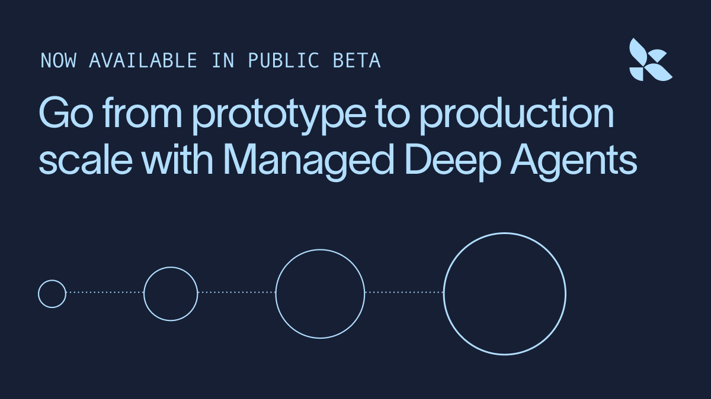
Deep Agent를 프로토타입 단계에서 프로덕션 환경으로 확장할 때 발생하는 인프라 관리 부담을 해결하는 LangSmith의 관리형 런타임 서비스. Python 또는 TypeScript로 작성한 에이전트를 단일 명령어로 배포하면, 지속성, 메모리, 샌드박스, 채널, 평가 등 프로덕션 인프라를 LangSmith가 자동으로 관리한다. 개발자는 모델, 지시사항, 도구, 미들웨어, 서브에이전트 제어에만 집중할 수 있다.
핵심 포인트: 핵심 성과: 단일 명령어 배포로 프로토타입을 프로덕션 규모로 확장 가능하며, 오픈소스 Deep Agents 프레임워크로 모델과 비즈니스 로직의 완전한 소유권 제공.
🔗 langchain.com/blog/managed-deep-agents-is…
기타 (Others)
AI & RESEARCH
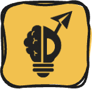
Stealing Reasoning Traces: 주요 AI API의 숨겨진 사고 과정 대규모 추출 취약점
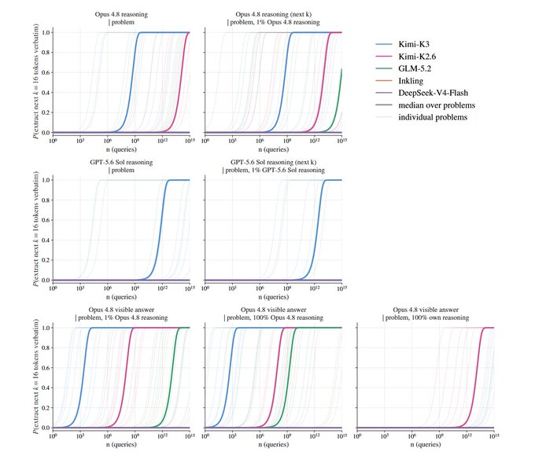
OpenAI, Anthropic, Google의 LLM API에서 암호화된 chain-of-thought 블록이 세션·사용자·모델 간 호환 가능하다는 아키텍처 취약점이 발견됐다. 연구진은 강화 모델의 추론 과정을 약화 모델에 주입해 jailbreak한 후 평문으로 복원하는 공격 기법을 개발했으며, 3개 회사 모두 동일한 방식으로 취약함을 확인했다. 또한 공개 로그에서 API 키와 비밀번호도 발견되는 등 정보보안 위험이 실제로 발생 중이다.
핵심 포인트: 핵심 기여: 세 주요 AI 제공업체가 모두 같은 구조적 취약점을 공유하며, 암호화된 추론 블록의 상호 호환성을 악용해 지식재산 보호와 모델 증류 방지 정책을 우회할 수 있음을 최초로 입증했다.
논문 (Papers)
PyTorchKR: 2026년 8월 첫째주 AI/ML 논문 10선
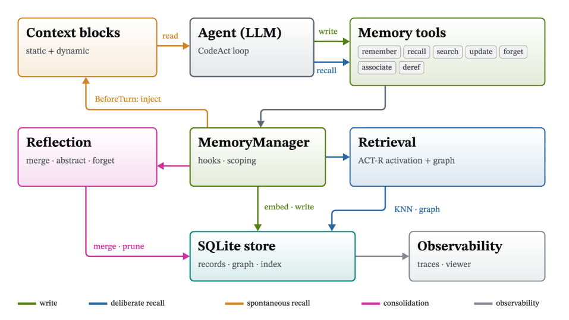
AI 에이전트 개발의 패러다임이 프롬프트 엔지니어링에서 체계적인 소프트웨어 공학으로 진화하는 추세를 분석한 주간 논문 모음. NOOA, Continual Harness, Harness-R1 등의 논문들은 모델의 가중치 수정이 아닌 도구, 메모리, 실행 런타임으로 에이전트를 개선하는 방식을 제시하며, 메모리 및 컨텍스트 효율성, 성능 평가의 엄격함이라는 추가 트렌드를 함께 다룬다.
핵심 포인트: 핵심 기여: 단순 프롬프트 조립에서 벗어나 OOP 기반 에이전트, 자동 런타임 최적화, 실패 경험 기반 자가 개선 방법론을 제시하며 에이전트 성능의 병목이 시스템적 스캐폴딩 설계에 있음을 조명.
🔗 discuss.pytorch.kr/t/2026-08-03-09-ai-ml…
기타 (Others)
LLM-Wiki: 추론으로서의 검색을 구현한 자가 진화형 에이전트 검색 시스템
기존 RAG 시스템의 단발성 텍스트 청크 검색 방식으로는 LLM 에이전트가 증거를 반복적으로 수집하고 추론하는 과정을 지원하기 어렵다는 문제를 해결하기 위해 텐센트 연구진이 제안한 시스템. 외부 지식을 양방향 링크 구조의 위키 페이지로 컴파일하고 에이전트에게 검색, 읽기, 링크 따라가기 같은 도구를 제공하여 마치 사람이 위키백과를 탐색하듯 자유롭게 네트워크를 돌아다니며 복합적 추론을 수행하도록 한다. Error Book 시스템으로 지식 베이스가 스스로 오류를 감지하고 진화한다.
핵심 포인트: 핵심 성과: HotpotQA, MuSiQue, 2WikiMultiHopQA 등 주요 멀티홉 QA 벤치마크에서 최고 성능을 달성했으며, 구조화된 위키 인터페이스와 자가 진화 메커니즘을 통해 기존 RAG의 추론 능력 한계를 극복했다.
논문 (Papers)
LLM-Wiki: 링크 기반 위키 네비게이션으로 멀티홉 추론 강화
기존 RAG 방식은 문서를 청크 단위로 잘라 벡터 검색하면서 청크 간 관계가 사라져 멀티홉 질문에 약하다는 문제가 있다. LLM-Wiki는 문서를 양방향 링크가 있는 마크다운 위키로 컴파일하고, 에이전트가 검색·읽기·링크 따라가기를 반복하며 추론하도록 설계했다. 자동 오류 수정(Error Book)으로 위키 구조가 자가 진화하며, HotpotQA·MuSiQue·2Wiki에서 기존 방법 대비 2.0~8.1 F1 향상을 달성했다.
핵심 포인트: 핵심 성과: 멀티홉 QA 벤치마크에서 2.0~8.1 F1 앞섬, ablation 결과 에이전트의 순회(traversal)가 위키 구조보다 두 배 중요한 것으로 증명. 핵심 기여: 지식 구조 개선이 아닌 에이전트 읽기 전략 최적화가 성능 향상의 핵심임을 실증.
기타 (Others)
DEVTOOLS & OPEN SOURCE
Thinking Orbs — AI 에이전트용 점선 로딩 애니메이션 컴포넌트
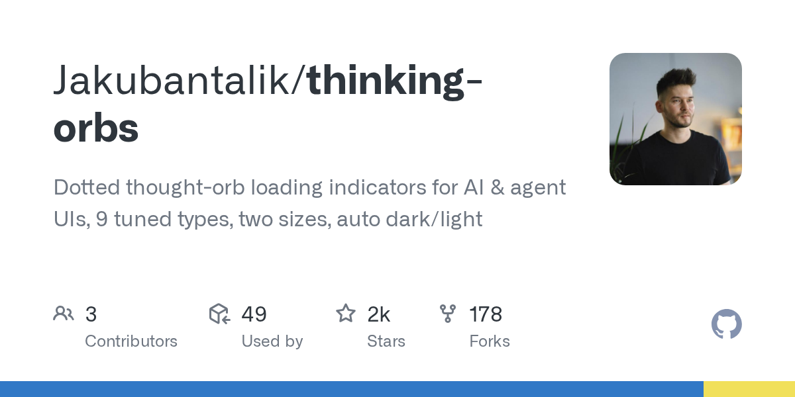
AI와 에이전트 UI에서 로딩 상태를 시각화할 때 기존 단순한 스피너로는 사용자에게 현재 수행 중인 작업을 명확히 전달하기 어렵다는 문제가 있다. Thinking Orbs는 9가지 독립적인 애니메이션 상태(검색, 사고, 해결, 청취 등)를 제공하여 에이전트의 구체적인 작업 상태를 직관적으로 표현한다. 순수 2D 캔버스 기반으로 WebGL이나 필터 없이 Chrome, Safari, Firefox에서 동일하게 작동하며, 채팅 아바타 및 인라인 텍스트용 두 가지 크기와 자동 다크/라이트 모드 지원을 제공한다.
핵심 포인트: 핵심 기여: 9가지 손으로 조정한 애니메이션 상태와 2가지 용도별 크기 프리셋을 제공하며, 크로스 브라우저 호환성과 자동 테마 감지로 모든 프로젝트에서 즉시 사용 가능한 구현을 지원한다.
🔗 github.com/Jakubantalik/thinking-orbs
기타 (Others)
anydoc — 오피스 문서를 5ms 이내에 마크다운으로 변환하는 Rust 라이브러리
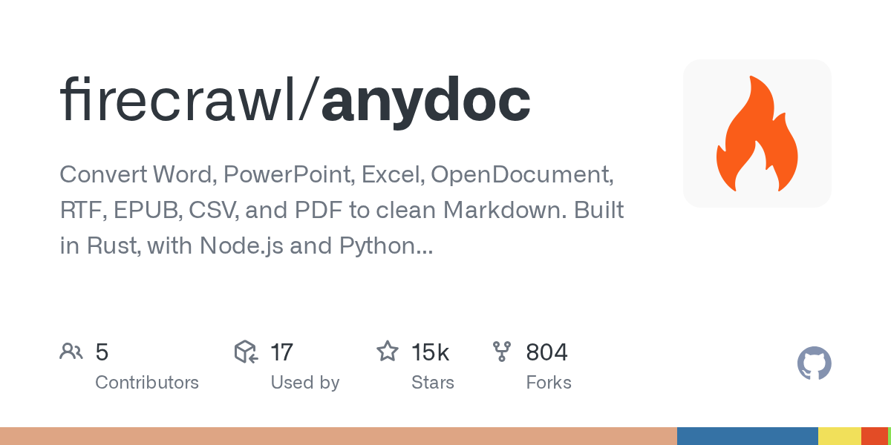
AI 파이프라인에서 다양한 오피스 문서 형식(.docx, .pptx, .xlsx, .pdf, .epub 등)을 처리할 때 형식마다 다른 파서를 붙여야 하고, 표 이스케이핑 같은 버그 수정이 각 형식별로 반복되며, 변환 속도가 느린 문제가 발생한다. anydoc은 순수 Rust로 구현된 라이브러리로, 각 형식의 파서가 공통 문서 모델을 생성하고 하나의 GitHub Flavored Markdown 직렬화기를 통과시켜 모든 형식에서 일관된 변환 결과를 제공한다. 문서 한 건 변환 시간이 5밀리초 이하로, 외부 서비스나 머신러닝 모델 호출 없이 동작한다.
핵심 포인트: 핵심 성과: 문서 변환 속도 중앙값 5ms 이하로 달성하고, 한 가지 형식의 버그 수정이 자동으로 모든 형식에 적용되는 일관된 구조 제공. Rust, Node.js, Python, WebAssembly 네 가지 배포 형태와 CLI 및 Agent Skill 지원.
기타 (Others)
firecrawl/pdf-inspector — OCR 비용 절감을 위한 PDF 타입 사전 분류 엔진
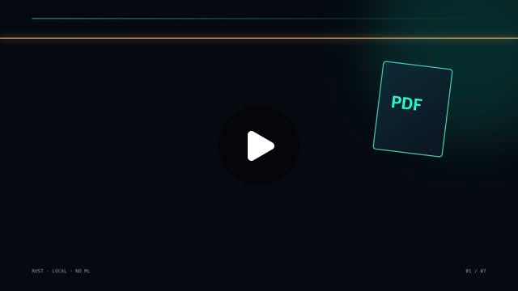
PDF 처리 파이프라인에서 모든 문서를 즉시 OCR로 보내면 불필요한 비용이 발생한다는 문제를 해결하기 위해 로컬 Rust 엔진으로 문서를 먼저 분석한다. PDF의 텍스트 연산자와 이미지 연산자를 샘플링해 TextBased, Scanned, ImageBased, Mixed 타입을 10~50ms 내에 분류하고, 텍스트 기반 PDF는 폰트, 좌표, 레이아웃 정보를 재사용해 직접 Markdown으로 변환한다. 이미지 기반 페이지만 OCR을 거쳐 전체 파이프라인의 비용과 지연을 대폭 감소시킨다.
핵심 포인트: 핵심 성과: 200개 PDF 벤치마크에서 overall 0.875, reading order 0.915의 정확도 달성. Python, Node.js, Rust, 브라우저 WASM 바인딩 제공.
🔗 threads.com/@devkhpark/post/DbqkJQqjUH6?x…
기타 (Others)
PRODUCT & INDUSTRY
건설사 R&D 감소의 진짜 의미: 외주에서 내재화로의 전환
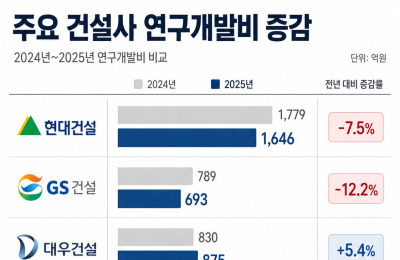
주요 상장 건설사들의 연구개발비가 전년 대비 11.4% 감소한 것으로 나타났으나, 이는 AI·스마트건설에 대한 관심 부족이 아니라 외부 용역비 절감에 따른 것이다. 건설사들이 외부 SI 용역을 줄이고 사내 인력으로 도구를 직접 개발하는 방식으로 전환하고 있으며, 현장 데이터를 직접 다루는 역량을 내재화하는 과정이 진행 중이다. 예산 규모보다는 도메인 데이터를 자체적으로 활용하기 시작한 방향성이 진정한 AI 역량 강화를 의미한다.
핵심 포인트: 핵심 통찰: R&D 예산 감소의 상당 부분이 외부 연구위탁 비용 절감에서 비롯되었으며, 건설사들이 외부 용역에서 내부 역량 구축으로 전환하는 국면이 진행 중이다. 도면과 원가 데이터 정리, 사내 도구 개발 등 회계상 R&D로 반영되지 않는 실질적 AI 역량 강화가 동시에 일어나고 있다.
🔗 newspim.com/news/view/20260708001082
기타 (Others)
AI 출력의 손글씨 애니메이션 — 신뢰도를 높이는 UX 디자인
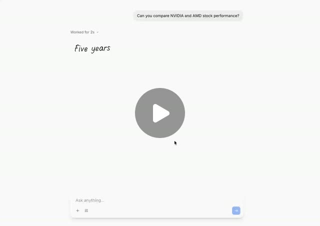
AI의 출력이 너무 정갈하고 완벽하면 오히려 기계적으로 느껴져 신뢰도가 떨어진다는 문제를 해결하기 위해 손글씨 스타일 애니메이션을 도입한 사례. SVG 패스 애니메이션, 필기체 폰트, 스트리밍 출력 속도 조절을 결합하여 마치 누군가 옆에서 실시간으로 작성하는 듯한 경험을 제공한다. 망설임과 수정의 흔적을 남김으로써 AI 출력에 인간미를 더하고 사용자의 심리적 거리감을 좁히는 세밀한 디자인 접근법이다.
핵심 포인트: 핵심 기여: 애니메이션 SVG, 필기체 폰트, 스트리밍 조절을 결합하여 AI 출력의 신뢰도를 높이고, 디자인 선택만으로 더 똑똑한 답변보다는 더 인간적인 느낌의 출력을 구현했다는 점.
🔗 threads.com/@choi.openai/post/DbtrtCyjSS7…
기타 (Others)